养老送终，不等于原谅
情境：周媚说会按福利院标准给父亲养老，但不会原谅他。
遇到这种情况，可以这样做
- 尽义务和交真心，可以分开计算。
- 不必为别人的浪子回头而牺牲自己。
- 把「血缘」和「亲情」分开，也是一种清醒。
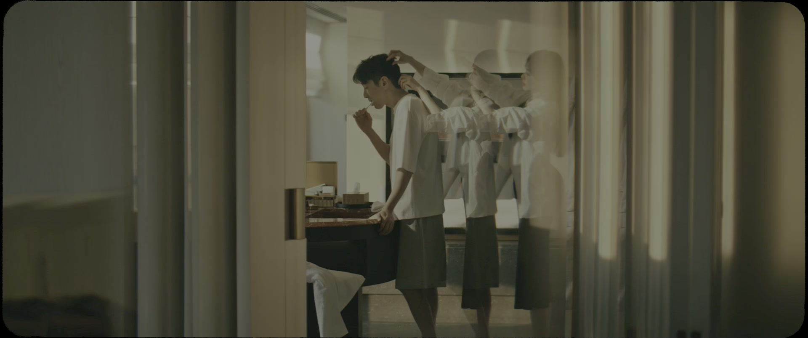
Drama Recap · 剧情图文总结
第 32 集 · 江湖再见
周媚妈妈以跳楼相逼，周媚纵身一跃——「你们的女儿周媚，已经死了」；她归还贝文祺的礼服，却查出怀了双胞胎；茞星散伙，内鬼被展翘轻轻揭过，「茞星的老板是我，所以我才是核心」；何韩的写作班迎来第一个「韩门子弟」。
周媚的家里乱成一团：爸爸被赶出门，裙子被撕碎，妈妈爬上了楼顶——「你要是敢跟那个贝律师在一起，我就死在你面前。」周媚答应了一切，却在妈妈下楼之后，从楼上纵身一跃。她活了下来，只说了一句：「你们的女儿周媚，已经死了。」另一边，茞星散伙，展翘放走了内鬼，把前额叶托给死对头，然后在何韩的写作班门口，看到一个年轻女孩举着自己的作品说：「韩门子弟。」
第32集，周媚重生，茞星落幕。 周媚的妈妈把周媚的爸爸赶出家门，逼他来认错求饶。周媚冷冷地说：「我不需要他道歉忏悔，我也不会原谅他的。我只不过是按照福利院的标准，给他养老送终。毕竟在法律上，我还是他的女儿。但是我不会为他哭的。」
剧里的鸡毛蒜皮，往往是人生的缩影。这些情节不只是故事——当你在现实中遇到同样的处境时，它们能提醒你：先做什么、别做什么、怎么说才有效。
情境：周媚说会按福利院标准给父亲养老，但不会原谅他。
情境：母亲以死相逼，周媚为了拉她反而从楼上滑落。
情境：展翘握住病床上的周媚：「过去三十年过得不好，但未来我们还有好几个三十年。」
情境：周媚终于等到贝文祺愿意给她一切，却发现自己没了感觉。
情境：展翘明知内鬼是谁却未揭穿，因为对方及时收手，没出卖前额叶的消息。
情境：蔡掌珠匿名投稿进何韩的写作班：「匿名投稿才能显出我的货真价实。」
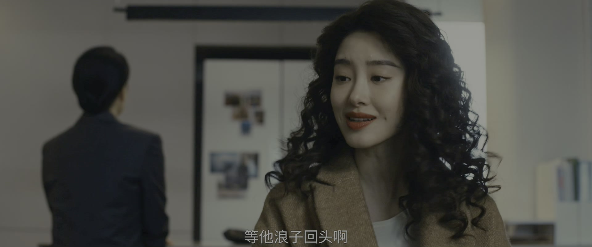
周媚问爸爸去哪儿了，妈妈说她把他赶走了：「当他没有地方去的时候，他就会后悔自己当初抛弃你我，去外面照顾那些女人了。」
妈妈还在等一句道歉和忏悔，周媚却把话挑明：「我不需要他道歉忏悔，我也不会原谅他的。我只不过是按照福利院的标准，给他养老送终。毕竟在法律上，我还是他的女儿。但是我不会为他哭的。」
关键台词 · KEY QUOTES
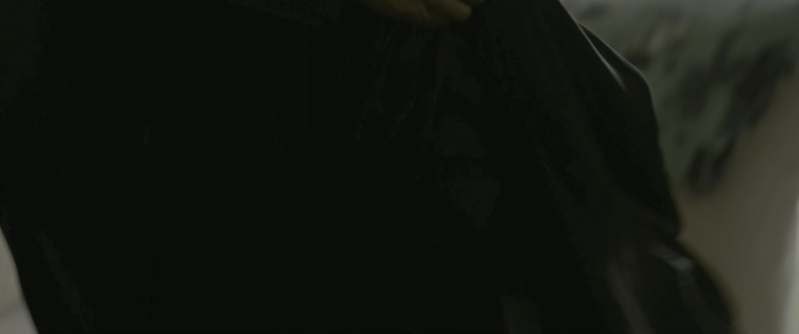
妈妈翻出了贝文祺送的礼服：「这是那个贝律师送给你的裙子。你本来想穿着它去巴厘岛，正式对外宣布你们在一起了，是吗？我不允许。」
周媚说自己在贝律师和爸爸的事情上跟妈妈观点不同，妈妈冷笑：「你是不是我说什么话，你都会故意跟我作对？你是要反抗我，是吗？」
关键台词 · KEY QUOTES
贝文祺接到电话：周媚妈妈要跳楼，遗书已经写好了——「到时候所有人都会知道，我是被我自己亲生的女儿给逼死的。」周媚冲到楼顶：「你是我妈，她是我爸。不能因为我，让你在我爸面前丢了性命。」
周媚答应不再见贝文祺，妈妈仍不肯下来：「现在说什么我都不信了。我真要死在你面前，你才不会跟他好。」周媚跪着保证：「我会证明给你看的，你先下来。」
关键台词 · KEY QUOTES
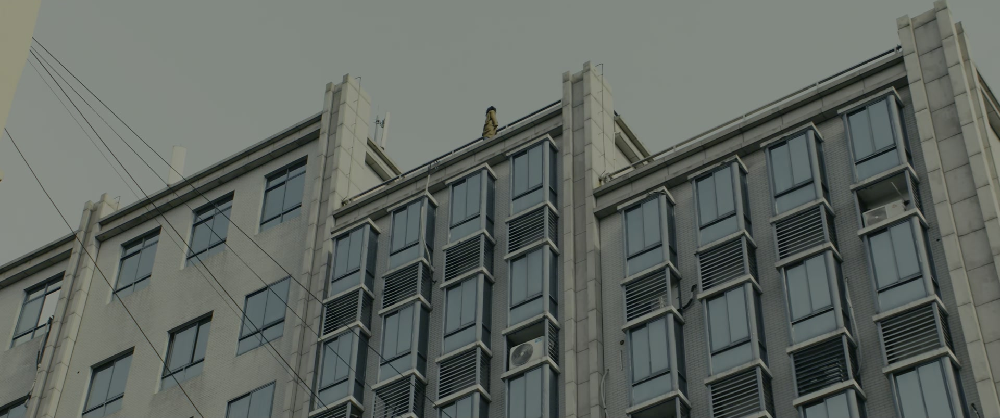
妈妈终于从楼顶下来。周媚说：「你说你跟我爸结婚以后，你就没有快乐。我从出生以来，我就没有快乐。」下一秒，她为了拉住妈妈，自己从楼上滑落。
幸好有消防气垫，周媚只是脚踝扭伤、轻微脑震荡。妈妈抱着她哭：「要不是底下有气垫，我也会跟你一起跳下去的。这么多年了，我们母女二人，什么都经历过了。」爸爸也说：「今天你从楼上一跃而下，我才知道什么是亲情。可能我知道的太晚了……但是我希望你好好地活下去，你还年轻。」
关键台词 · KEY QUOTES
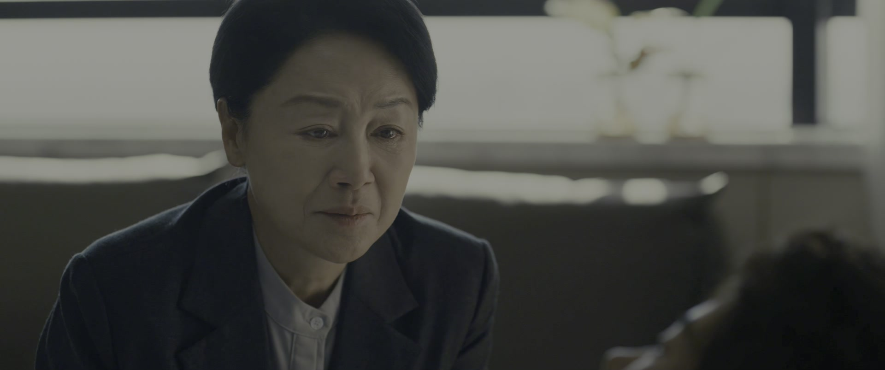
病床上，周媚对守在身边的父母一字一句地说：「你们的女儿周媚，已经死了。」她谁也不想见，只想见展翘。
展翘赶到医院，又急又心疼：「你今天把我吓死了你知道吗？你以后绝对不允许再这么做，知道吗？」周媚说：「以前的周媚，我已经还给她。现在的周媚，是我自己的。」展翘握住她的手：「过去三十年过得不好，但未来我们还有好几个三十年，我们可以一起过得很好。」
关键台词 · KEY QUOTES
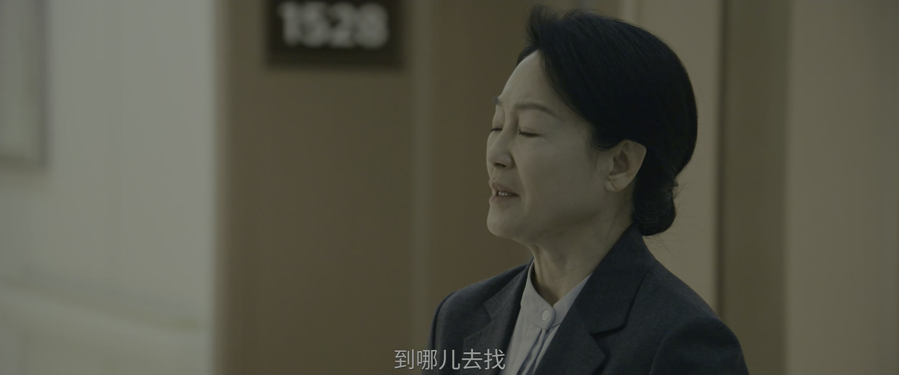
周媚的妈妈质问爸爸：「如果再给你一次选择的机会，你还会选择离开我和女儿吗？」爸爸沉默许久，说：「会。咱们结婚就是个错误。」
妈妈追问：「难道你到外面找那些骗你的女人，是正确的了？」爸爸叹了口气：「也许……也是个错误。」
关键台词 · KEY QUOTES
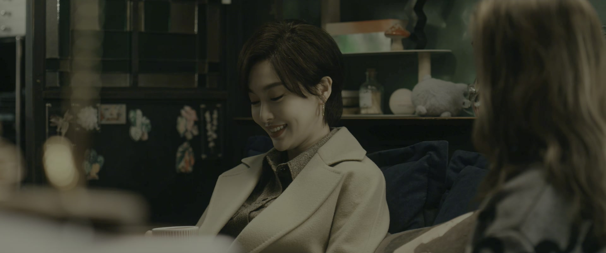
蔡掌珠跟展翘坦白：「我出去写小说去了。之前在公司还有别的工作，我怕跟你说了，你觉得我不务正业。但现在公司要解散了，我想着还是得找机会跟你说一下。」
她的心愿朴素又滚烫：「我不想只做他的书粉。所以我希望我有一天，可以跟他比肩。」公司解散后她主动要搬出去，还请展翘爸爸帮忙找房源，「我还是得给周媚留一间屋子」。
关键台词 · KEY QUOTES
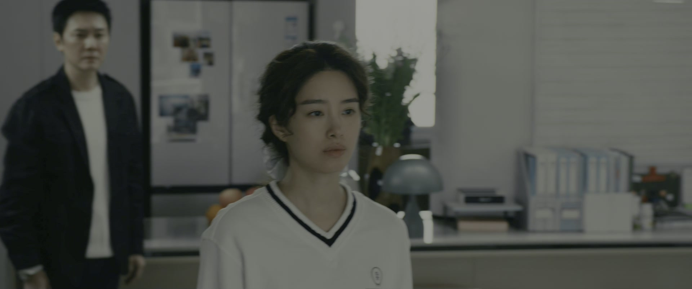
贝文祺到医院探望周媚，被她叫停：「我们的关系，不管之前是什么关系，我都不想继续了。」礼服她收下了，却没有穿它的心情。
贝文祺不甘心：「可是现在，是我们最好的时候。我终于等到你和我一起去，我终于等到这一天。你跟我说，这一切都可以满足。但我竟然没有感觉。或者说，这个感觉也就那样。」贝文祺说「等你好了我再来找你」，周媚没有回头。
关键台词 · KEY QUOTES
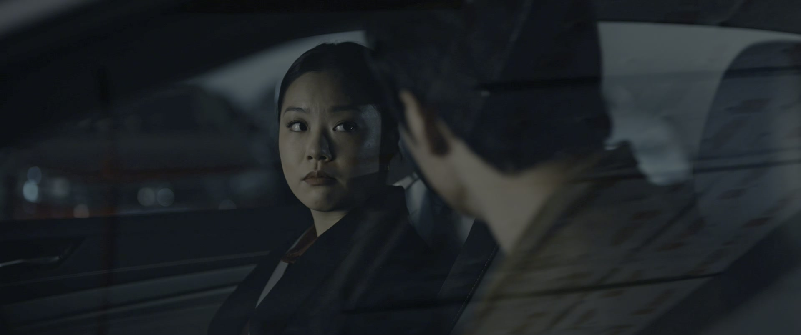
检查结果出来，周媚怀孕了，而且是双胞胎。陪她来的人愣住了：「我们没有说要孩子呀。你不是说你吃的是避孕药吗？吃避孕药怎么会突然怀孕呢，还是双胞胎？」
对方回过神：「你根本就没有吃避孕药吧。这叫惊喜吗？这叫惊吓，是欺骗你知道吗。」周媚想要这个孩子，对方放话：「这是我们未来要一起面对的事情，你跟我商量过吗？我告诉你，要我同意，我们才可以要。」
关键台词 · KEY QUOTES
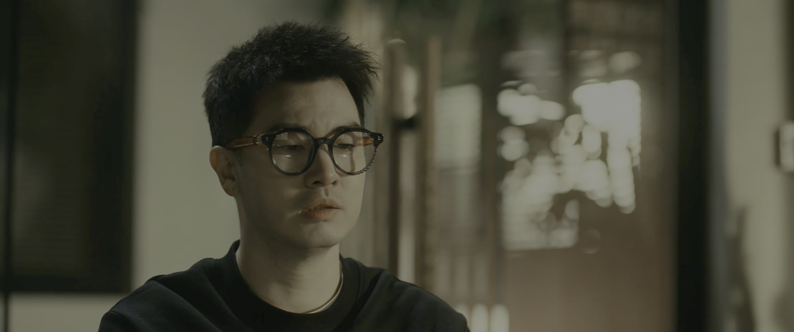
茞星解散前，展翘把新人作者名单泄露的事摊在明面上：「这份名单，是你给到赵兰欣的吧。」对方坦白：「我确实之前是想跳槽到赵兰欣那儿的。因为我觉得，茞星的核心是作者，作者的核心是何韩，我以为你很快会放弃茞星的。」
展翘淡淡说：「茞星的老板是我，所以我才是核心。甚至直到现在，我都不认为那是放弃，那只是暂停。」对方问为什么知道了却不揭穿，展翘答：「因为我发现你及时收手了。你没有把前额叶的事情去透露给赵兰欣，所以我们《山鬼令》上线的时候，才会这么顺利。」
关键台词 · KEY QUOTES
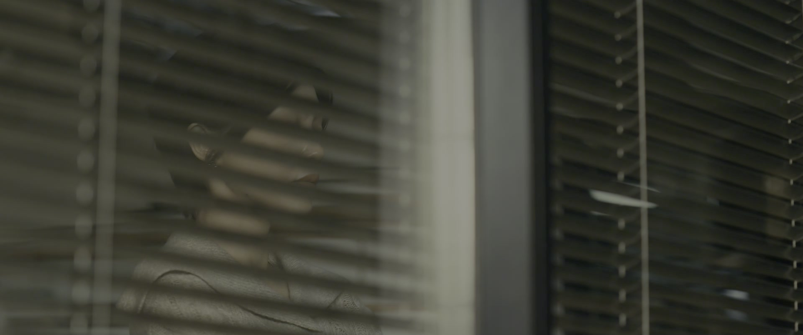
茞星的办公室人去楼空。大家学着江湖侠客的样子告别：「依依不舍，步步相送，也终究是要告别。不如学着江湖侠客们，来一个潇洒的当机立断。深爱仍在，江湖再见。」
关键台词 · KEY QUOTES
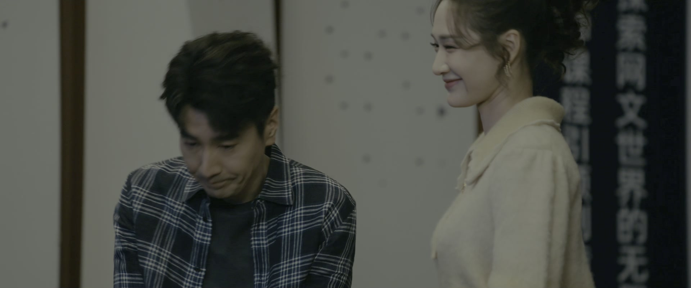
何韩的网文写作班开班：「十天脱产班，包吃包住，网文大神手把手指导，完成一个故事。」咪咪从一百多个报名者里筛出十二个。
有个女孩是匿名投稿进来的，她说：「你要是不提前跟我说一声，显得好像我走后门一样。匿名投稿，才能显出我的货真价实。」她对何韩许愿：「要有一天我上榜了，大家看到我的名字，就能知道我是你的徒弟了——韩门子弟。」何韩自谦「我肯定不是什么好师傅」，她笑着接：「没关系啊，我肯定会是一个好徒弟的，我会追着你教我的。」
关键台词 · KEY QUOTES
母亲以死相逼后纵身一跃；宣告「你们的女儿周媚已经死了」；与贝文祺分手；查出怀了双胞胎。
赶到医院探望周媚；解散茞星，给内鬼留了体面；把《山鬼令》托给赵兰心。
接到周媚妈妈跳楼的消息赶到现场；被周媚归还礼服、结束关系。
坦白想当作者，匿名投稿进了何韩的写作班，立志做「韩门子弟」。
写作班开班，从一百多人中选出十二个学员，收下第一个「韩门子弟」。
赶走丈夫，撕掉礼服，以跳楼相逼，最终与女儿抱头痛哭。
被赶出家门，目睹女儿跳楼后说出「我才知道什么是亲情」。
母亲以死相逼之后，周媚终于把攒了三十年的委屈说出口。
病床上的周媚宣告新生，跟过去划清界限。
归还礼服时，周媚平静地与贝文祺告别。
双胞胎的检查结果，让一段关系第一次裂开。
内鬼摊牌，展翘用一句话守住自己的名字。
蔡掌珠匿名投进何韩的写作班，许下一个上榜的愿。
重生的周媚，她的感情和生育选择都成了未知数。
周媚怀上双胞胎，但一段因「欺骗」而起的裂痕已经埋下。
内鬼要去戴珊的公司，展翘也在谈同一个方向，新职场线正在汇合。
展翘把《山鬼令》托给赵兰心，她和何韩各自开启了新赛道。
蔡掌珠的作家梦从这句话开始，而何韩的「不是好师傅」早已预告了师徒的漫长磨合。